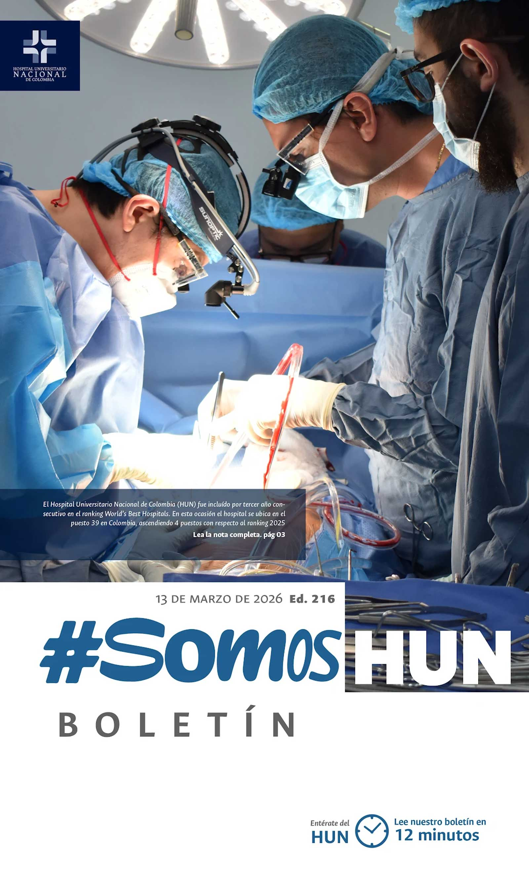
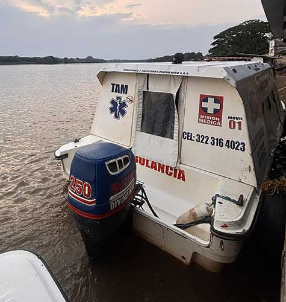
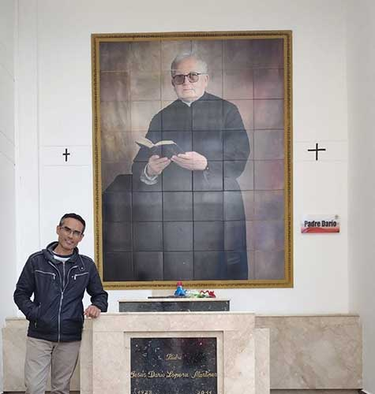
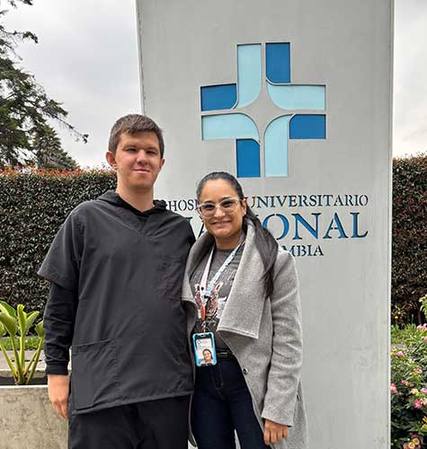
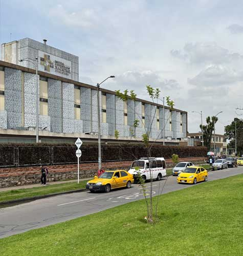

Ver todos los boletinesEl HUN entre los mejores del mundo por tercer año consecutivo
El Hospital Universitario Nacional de Colombia (HUN) fue incluido nuevamente en el ranking World’s Best Hospitals 2026, elaborado por la revista Newsweek en colaboración con la firma internacional de análisis de datos Statista, que reconoce a las instituciones hospitalarias con los más altos estándares de calidad a nivel global.Leer más

Telemedicina para reducir brechas de acceso en Puerto Leguízamo, Putumayo
En el corazón de la amazonía colombiana, sobre el río Putumayo, donde las distancias geográficas, el conflicto armado, la conectividad limitada y las condiciones de infraestructura representan desafíos permanentes para la atención en salud, el programa “Conectando la salud a la región” de la Universidad Nacional de Colombia (UNAL) y su Hospital Universitario Nacional de Colombia (HUN) avanza de la mano del Ministerio de Salud y Protección Social como una estrategia para acercar servicios especializados a las comunidades alejadas del país y así fortalecer su capacidad resolutiva en beneficio de los pacientes.Leer más

Del pan envenenado a un nuevo esófago: cinco años para volver a comer. Nelson y su periplo
En la casa religiosa donde vivía Nelson Andrés Timina Colorado, en Medellín, el problema parecía menor: una plaga de ratas que se movía entre los pasillos y los rincones silenciosos del lugar. Para ahuyentarlas, alguien dejó pan con veneno. Nadie imaginó que ese gesto, cotidiano y práctico, iba a alterar por completo una vida. Nelson tampoco lo sabía. Tomó el pan, lo comió y siguió con su día.Leer más

El camino hacia la inclusión laboral
El Hospital Universitario Nacional de Colombia (HUN) continúa avanzando en la construcción de un entorno laboral más inclusivo con la vinculación de su primer trabajador en condición de discapacidad, un paso que refleja el compromiso institucional con la equidad, la diversidad y el fortalecimiento de oportunidades dentro de la organización.Leer más

El ruido urbano impacta en los entornos hospitalarios
En ciudades cada vez más dinámicas y ruidosas, los hospitales no siempre logran aislarse del entorno que los rodea, lo que puede afectar los procesos de recuperación y bienestar de los pacientes. Esta realidad pone en evidencia una problemática creciente en Bogotá: la progresiva pérdida de espacios verdaderamente silenciosos, incluso en lugares donde el descanso y la tranquilidad deberían estar garantizados.Leer más